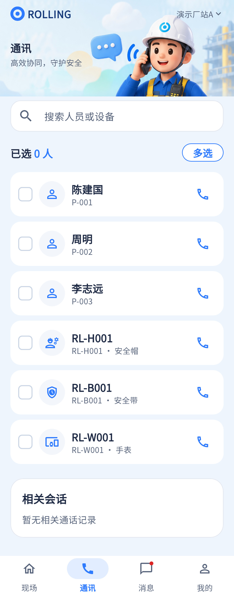

多选界面已有，但群呼、APP/PC账号直呼以及真正以帽为发起端均未形成所示完整能力。
相同 · 已有基础
搜索人员/设备、多选计数、手机/安全帽/视频入口、通信能力边界均有对应UI。
不同 · UI与场景
当前联系人为独立卡，选择后才显示目标与发起区；记录在长页底部，没有设计的快捷入口；缺APP/PC角色标识。
01 / 先看 UI
两图显示宽度统一；设计390px与当前360逻辑宽的画布不同。各图可独立滚动到底，点击“原图”放大。


使用既有组件截图；业务数据为示例。
02 / 逐项核对功能与小交互
入口：底部导航 → 通讯 · 当前形态：主页面
| 编号 | 部位 | 设计要求 | 当前UI | 功能结论 | 下一步 |
|---|---|---|---|---|---|
| 17-01 | 顶部搜索 | 插画+搜索人员或设备 | 当前同源图片，控件较高 | 已有代码：搜索与联系人呈现 | 统一视觉密度，保留加载/失败 |
| 17-02 | 联系人 | 人员角色、APP/PC端、设备标识 | 当前人员编号/设备SN，不是完整端点目录 | 部分：人员解析为其装备，不等于APP或PC账号可被呼叫 | 补端点与在线能力契约，角色标签需真实来源 |
| 17-03 | 多选 | 多选开关、勾选、已选人数 | 当前都有 | 已有代码：本地selectedKeys | 人数需明确是联系人还是设备，避免同人设备重复 |
| 17-04 | 群体通话 | 多人选中后共同通话的场景 | 多选后仍可按呼叫 | 缺失：resolved.first单呼，提示群体通话待开通 | 保留明确提示或禁用群呼；接多人会话再开放 |
| 17-05 | 手机呼叫 | 本机麦克风/扬声器 | 当前入口已有 | 已有代码：创建单呼并走RTC控制器 | 真实音频/权限/远端回执待联调 |
| 17-06 | 安全帽呼叫 | 本人绑定帽作为发起端 | 当前判断绑定帽后执行相同startCall | 部分：fromHelmet只做绑定检查，请求未传发起帽参数 | 扩展帽发起协议与服务，不能把手机RTC称为帽呼叫完成 |
| 17-07 | 视频呼叫 | 向所选装备视频 | 当前入口已有 | 已有代码：按intercom+video能力与权限启动 | 真实画面待联调；无能力要可解释 |
| 17-08 | 语音播报 | 按目标能力切TTS | 当前目标区有文字播报选项 | 已有代码：进入同页TTS表单 | 保留，不因参考17未列而删 |
| 17-09 | 历史入口 | 查看通话记录 | 当前相关会话在底部 | 部分：数据可查，缺快捷滚动/独立内容入口 | 补明确入口，避免长页寻找 |
| 17-10 | 人员和设备数量 | 搜索完整授权对象 | 设备初始只取50，其他为options | 部分：大数据完整性需验 | 补分页/远端搜索，防止只搜索已加载对象 |
源码依据
communications/communications_page.dart:431,476,593,1039,1148；communications/api_gateway.dart:10
链接为随报告保存的带行号快照；行号对应分析时源码。以函数和字段共同定位，不能将请求代码视为执行成功证据。